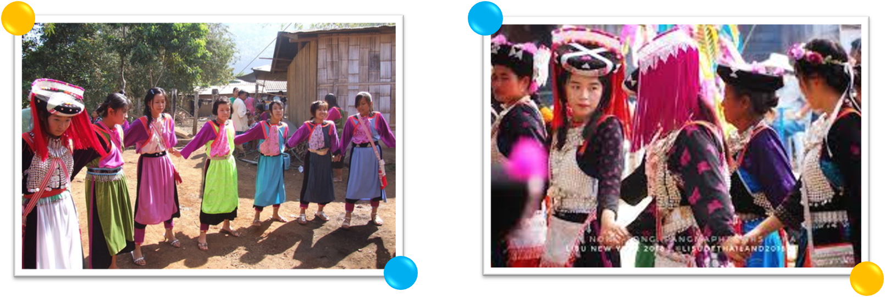

ประวัติความเป็นมาของชาวเผ่า ลีซู ลีซู หมายถึง ผู้ใฝ่รู้แห่งชีวิต เดิมอาศัยอยู่ที่ต้นแม่น้ำสาละวิน และแม่น้ำโขงทางตอนเหนือของธิเบต และทางตะวันตกเฉียงเหนือ ของมณฑลยูนาน ประเทศจีน และเมื่อประมาณปี พ.ศ. 2464 ถูกกดดันทางการเมือง การปกครอง และขาดแคลนที่ดินทำกินใน พม่า ชาวลีซอจึงได้อพยพเข้ามาใน ประเทศไทย ทางจังหวัดเชียงราย และกระจายไปอาศัยอยู่ใน จังหวัดเชียงใหม่ แม่ฮ่องสอน ตาก เพชรบูรณ์ กำแพงเพชร ลำปาง สุโขทัย พะเยา และแพร่ เป็นกลุ่มชาติพันธุ์ที่มีความเชื่อมั่นในตัวเองสูง รักความอิสระ ภาษา ลีซอ อยู่กลุ่มเดียวกับ มูเซอ และ อาข่า เรียกว่าโลโล กลุ่มโลโล มีความสัมพันธ์กับภาษาพม่ามีภาษาพูดในกลุ่มหยี (โลโล) ตระกูลธิเบต-พม่า 30% เป็นภาษาจีนฮ่อ ไม่มีภาษาเขียนของตนเอง แต่สำหรับ ลีซอ ที่นับถือเป็นคริสเตียน ได้ใช้อักษรโรมันมาดัดแปลงเป็นภาษาเขียนของชนเผ่า การตั้งชื่อ นับตามลำดับเลขที่ 1-2-3 ผู้ชาย ลงท้ายด้วย ยะ เช่น อะเบยะ ผู้หญิง ลงท้ายด้วย มะ ลักษณะบ้านเรือน ชาวลีซอ อาศัยอยู่บนเนินเขา ความสูงไม่น้อยกว่า 800 เมตร มีน้ำใช้สะดวกและมีธารน้ำไหลผ่าน สูงสุดของหมู่บ้านจะเป็นที่ตั้งของศาลผีประจำหมู่บ้าน ผีปู่ตา ผีผู้เฒ่า ปลูกบ้านคร่อมบนดินเพราะป้องกันความหนาวได้ดี การจัดที่ในบ้าน ทำเป็นสัดส่วน กั้นเป็นห้องนอน เป็นที่เก็บเครื่องมือการเกษตร และมีชั้นไม้ใผ่ สำหรับวางเครื่องครัว การแต่งกาย ผู้หญิงลีซอ ทุกวัยแต่งกายด้วยผ้าสีสดใส สวมใส่เป็นเสื้อตัวหลวม แขนกระบอก ส่วนหน้าของเสื้อยาวถึงเข่าส่วนหลังยาวถึงนิยมสีน้ำเงิน เขียว ฟ้า และม่วง คอเป็นผ้าสีดำ ตกแต่งลวดลายสวยงาม โดยนำผ้าแถบผ้าสีต่างๆเช่น ม่วง ฟ้า ชมพู เขียว ดำ ขาว ส้ม แดง มาเย็บต่อกันเป็นริ้ว สวมเสื้อกั๊กที่ตกแต่งด้วยกระดุมเงิน สวมกางเกงหลวมๆสีดำ ในตัวเสื้อ ใช้ผ้าสีดำพันรอบเอว คล้ายเข็มขัด สวมปลอกขาเพื่อป้องกัน แมลง กิ่งไม้ หรือกันหนาว ผู้หญิงสูงวัยโพกหัวด้วยผ้าสีดำยาวพันหัวหลาย ๆ รอบ แล้วเก็บชาย หญิงสาวจะสวมหมวกโดยประดับประดาด้วยลูกปัดหลากสี ผู้ชายลีซอ ทุกวัยแต่งกายเหมือนกัน โดยสวมใส่กางเกงที่มีความยาวเลยเข่าเล็กน้อย เป้ากว้างมาก สีน้ำเงิน สีเขียว ฟ้า เสื้อสีดำ แขนยาว คอป้ายตกแต่งกระดุมเงิน ติดรังดุมสีน้ำเงินที่ส่วนบนของตัวเสื้อ สวมปลอกขาสีดำ